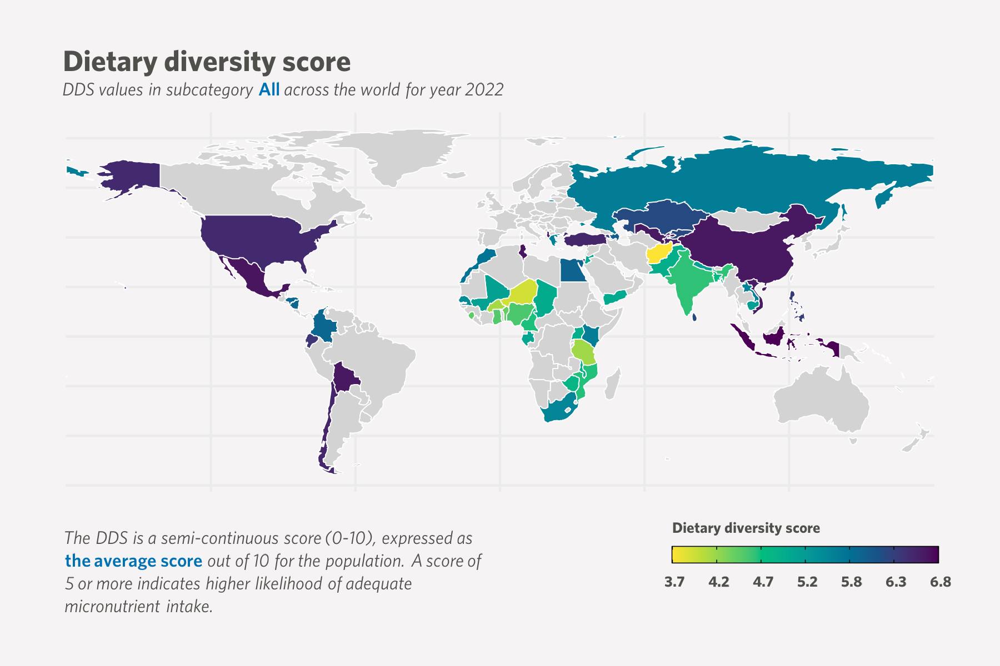

2024
How beautiful graphs emerge from simple ones
r
visualization
ggplot
camcorder
Motion picures showing design process of ggplot graphs

Statistical analysis for weighted data
r
survey
weighted data
statistical analysis
visualization
DQQ
GAIN
Step by step guidline for extracting statistical information for weighted data using *survey* R package

No matching items
2023
Embedded emissions for each pound you spend?
review
jounral of industrial ecology
emission
carbon footprint
carbon multipliers
transaction
income class
Using houshold spend data for mapping emissions

review
jounral of industrial ecology
LCA
sensitivity analysis
uncertainty analysis
distrubution
use-stage LCA
markov chain
airconditioning
Importance of aggregation level on sensitivity of LCA output

Make your quarto interactive with embedded shiny app
r
shiny
quarto
visualization
interactivity
DQQ
GAIN
Use HTML iframe tag to link shiny and quarto

No matching items